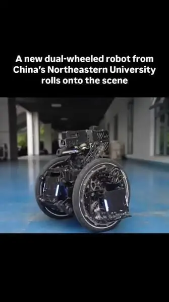
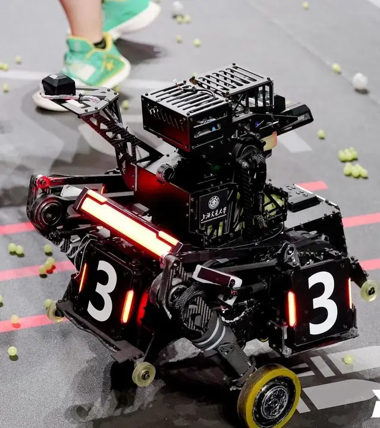

5. Design Thinking Methodology
Three coupled subsystems are considered: chassis, acquisition/locking interface and detachable launcher. Concepts were evaluated against compliance, reliability, complexity, mass and integration risk.
Chassis Design
The chassis must climb a 200 mm step while meeting the 50 W drive-power limit. Four-wheel platforms with separate climbing aids and two-wheel balancing platforms were considered; the latter reduces the number of powered drive wheels and can reuse Calibur's leg modules.
Parallel- and serial-leg architectures were compared against the mobility requirements using the Shanghai Jiao Tong University Jiaolong Team serial-leg open-source report [11] and the demonstrations of step climbing [22], [23] and self-recovery [20], [21]. The videos illustrate other robots, not tests of this Heavy robot.
 Big Wheeled Balancing Robot |  Serial-Leg Balancing Robot |
Table 5: Balancing Robot Architectures
A reused serial-leg balancing chassis was chosen for its step-climbing potential, shorter development time and lower cost.
Video evidence: wheel-leg concept comparison
These external demonstration videos appear in the interim presentation (slides 28–29). They support the qualitative concept comparison, not a claim that the ASI-408 prototype has passed climbing or self-recovery tests. The observations below reflect the presentation's comparison of the illustrated examples.
Climbing steps — parallel-leg versus serial-leg
Recovery after overturning — parallel-leg versus serial-leg
Bilibili videos are embedded through their external player. If playback is blocked by the browser or video provider, use the direct “Watch on Bilibili” link on each card.
Grabbing Mechanism Design
Four acquisition concepts were screened: six-DOF arm, gantry-arm, rack-and-pinion puller and timing-belt puller. Criteria and weightings appear in Appendix C; the table below summarizes qualitative scores rather than measured performance.
The trade-off is informed by studies of precision linear feed mechanisms [16], motion-planning complexity in multi-joint robot arms [17], transmission error and backlash in rack-and-pinion drives [18], and the compliance and dynamics of timing-belt stages [19]. These studies explain relevant engineering mechanisms; they do not validate the proposed puller at competition scale.
Each concept received a preliminary score from 1 (weak) to 5 (strong); scores are engineering estimates pending prototype validation.
| Mechanism | Reliability | Grabbing Speed | Mechanical Complexity | Weight and Space | Easy of Operation | Alignment Tolerance | Overall |
|---|---|---|---|---|---|---|---|
6 DOF Robot Arm with Gripper | 4 | 3 | 1 | 1 | 3 | 5 | 2.8/5 |
Gantry System with simple robot arm | 4 | 2 | 1 | 1 | 3 | 4 | 2.45/5 |
Rack and Pinion Pulling Mechanism | 5 | 3 | 5 | 4 | 5 | 2 | 4.15/5 |
Timing Belt Linear Puller | 5 | 5 | 5 | 4 | 5 | 2 | 4.75/5 |
Table 6: Grabbing Mechanism Weighted Decision Matrix
The timing-belt linear puller ranked first (4.75/5), ahead of rack and pinion (4.15), six-DOF arm (2.80) and gantry-arm (2.45). Its apparent benefits are low actuator count, speed and operator simplicity; its principal risk is small lateral misalignment tolerance. It is the provisional acquisition choice, to be evaluated through repeatable timed docking trials.
Modular 42mm Launcher
Three launcher module boundaries were assessed: firing-only, firing with a pitch/feed path, and a fully self-contained module. Architectures and evaluation criteria are detailed in Appendix C.
The modular architecture is informed by prior surveys of self-reconfigurable robots [13] and assembly-oriented modular product design [14]. The aiming/pitch mechanism should also account for the mass–inertia–stabilization trade-off discussed in optical gimbal literature [15]. The assessment scores remain design estimates, not validated performance.
Concept scores use a 1–5 qualitative scale; no comparative physical tests have yet been performed.
Qualitative architecture scores are summarized below (criteria in Appendix C):
| Mechanism | Attachment Reliability | Electrical Complexity | Weight | Projectile Feeding Reliability | Overall |
|---|---|---|---|---|---|
| Launcher-Only Module | 3 | 5 | 5 | 3 | 4/5 |
| Launcher Module with feedpath | 2 | 3 | 3 | 3 | 2.7/5 |
| Full Gimbal | 4 | 1 | 1 | 5 | 2.7/5 |
Table 7: Launcher Weighted Decision Matrix
The firing-only module ranked highest (4.00/5 versus 2.70/5 for both alternatives) because it minimizes detachable mass and connections. However, feeding across the module boundary introduces alignment and jamming risks. No final architecture is frozen until interface testing confirms reliable feed and power transfer.